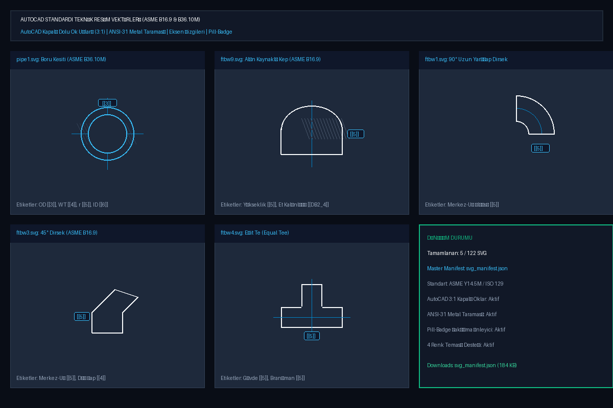

MÜHENDİSLİK ARACI
PipeData
SQLite tabanlı borulama veritabanı, vektörel teknik çizimler ve ölçü hesaplamaları için referans aracı.
01 / YAPI
Veri yapısı ve çizim
Boru, flanş, bağlantı elemanı ve vana ölçüleri SQLite veritabanında tutulur. İlgili ölçüler SVG teknik çizimlerinde aynı kayıtlarla eşleştirilir.
Amaç, standart ölçüye bakma, çizimi kontrol etme ve temel hesaplamaları tek arayüzde yapmaktır.

02 / KAPSAM
Teknik kapsam
Proje; ASME ile ilişkili boru ve bağlantı elemanı verileri, SQLite veri tabanı, SVG teknik çizimleri ve ölçü/hesaplama ekranlarını içerir.
Kaynak deposu özeldir; bu sayfa projenin herkese açık teknik özetidir.
BİLEŞENLER
- Standartlara göre düzenlenen borulama verileri
- Ölçülendirmeli SVG teknik çizimler
- Veri arama ve temel hesaplamalar